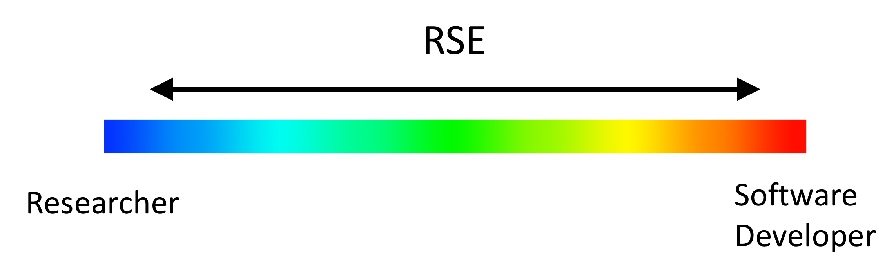
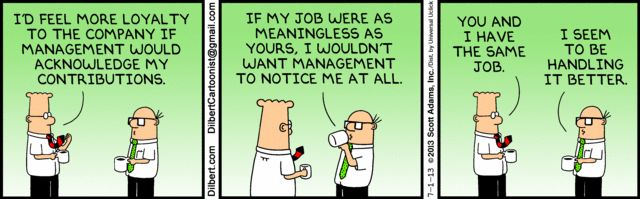
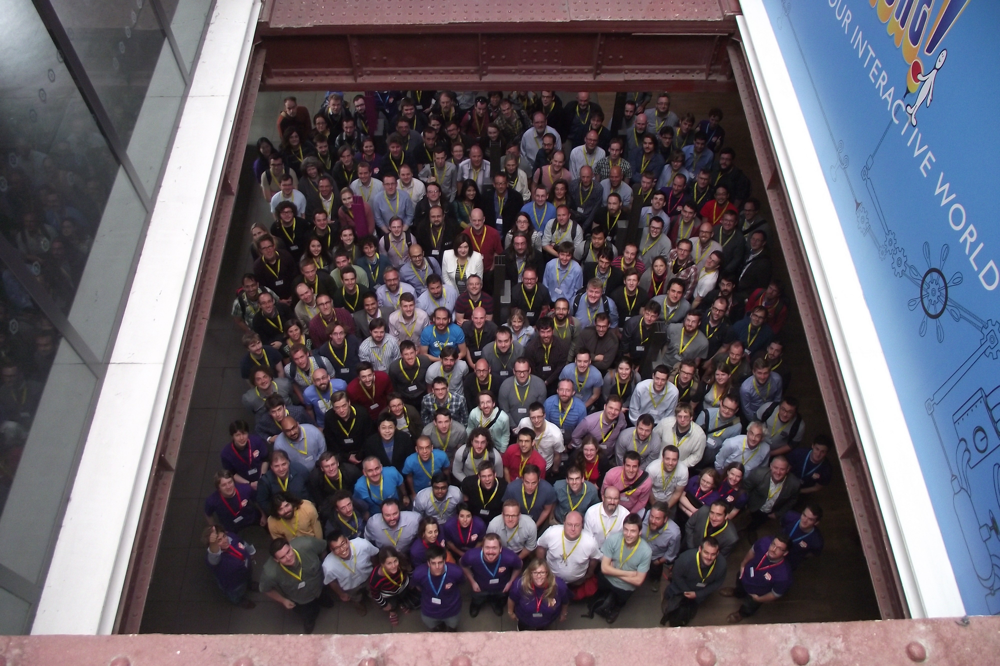
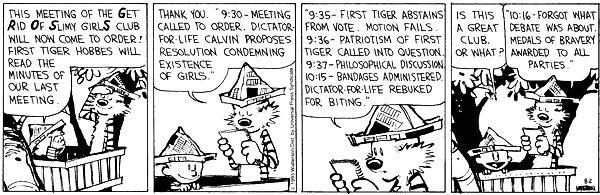

What's all this RSE stuff about?
Andy Turner, EPCC
26 Septemeber 2018
a.turner@epcc.ed.ac.uk
Why am I giving this presentation?
For Edinburgh
- Edinburgh area has a large amount of experience and expertise which would be valuable to the RSE community
- The RSE community has a lot of experience and expertise which would be valuable to people around Edinburgh (and they may not know about)
- Opportunities for career development of people in the Edinburgh area
Personally
- I believe RSE role is key to successful research
- I think people performing this role have been hidden
- I feel strongly that RSEs should have a recognised career path and opportunities
- I am lucky I managed to get work at EPCC - need to support this more widely
- I feel I can use my experience to make a difference
- It is an inspiring community to be involved in
Overview
- What is an RSE?
- Brief history of the RSE movement
What is an RSE?
Many people in research organizations around the world combine expertise in programming with an intricate understanding of research. Although this combination of skills is extremely valuable, these people often lack a formal career path, particularly in the academic system. There is no easy way to recognise their contributions, reward them, or represent their views.
These people are Research Software Engineers
The RSE spectrum…
…but also
- DevOps
- Service support
- Other things I have forgotten!
Why RSE movement?
- RSEs are critical to research but their role is not generally recognised (particularly in academia)
- Career evaluation structures need to be changed to match RSE careers better (e.g. not just publication-based)
- Appropriate career progression structures need to be put in place - should be support for technical advancement, not just managerial
- Recognise value of research software and its development on a par with research outputs
- Demonstrate the importance of RSEs to researchers, institutions and funders
Supporting RSE careers in one word:
Recognition
(Brief) RSE Movement History
“Developing the profession of a scientific software engineer and the career track of software developers in academia”
James Hetherington, 2012 SSI Collaborations Workshop
Need a name…
jobs.ac.uk: 10,000 jobs assessed
~400 related to software development (4%)
194 different job titles
Analyst Developer Analyst Programmer Analyst Programmer - SITS (x 3) Analyst/Programmer Applications Developer Applied Scientist Architectural Robotics Developer Assistant Data Programmer Assistant Project Manager Atmospheric Correction and Radiative Transfer Model Scientist Audio Software Developer - KTP Associate Bioinformatician Bioinformatician In Potato Genomics and Genetics Bioinformatician/Computational Bioscientist in Microbiology Bioinformaticians Bioinformatics Analyst Bioinformatics Postdoctoral Researcher Bioinformatics scientist Biometric Software Systems Developer Biorespository Software Developer C++ / 3D Graphics Software Engineer Casebooks Project Editor (Research Assistant/Associate) Climate Researcher (Research Associate) Clinical Study Programmer CoMPLEX Research Associate Computational Biologist / Bioinformatician Computational Scientist Computational Scientist in Computational Fluid Dynamics & Industrial Applications Computational Scientist in Structural Mechanics and Industrial Applications Computer Scientist Computer Vision Researcher Content Developer/Programmer Control Engineer-IMG - 3 posts CREATe Data Specialist Data Analyst Data Integration Coordinator Data Manager x3 Database and Software Engineer Database Manager/Researcher Database Programmer Digital Media Technician E-Learning Portal Manager (KTP Associate) e-Learning Systems Development Analyst e-Learning Systems Development Analyst (Moodle, SQL) E-Learning Web Developer E-Portfolio Learning Technologist Embedded Systems Engineer Engineering Technician Environmental Scientist EPSRC Studentship on Algorithmic Construction of Finsler-Lyapunov Functions Experimental Officer in Bioinformatics Experimental Psychologist Finance Assistant Gaia Alerts Software Developer Gaia Software Developer (Gaia UK Team) GIS Applications Specialist Graduate Programmer / Software Developer Graphics Programmer Health Data Manager / Scientist High Throughput Bioinformatician High Throughput Sequencing Bioinformatician (Two posts) HIVE Manager/ HIVE Co-ordinator HIVE Senior Researcher and Technical Lead Hydro-informatics Scientific Software Developer Image Analysis Manager for Cancer Imaging Information Systems Developer Instrumentation Engineer Investigator Statistician IT Developer IT Services Manager IT Services Specialist (e-Learning Systems) IT Support Technician (Unix / Windows Systems) Knowledge Transfer Partnership (KTP) Associate: Innovent Technologies LTD Knowledge Transfer Partnerships (KTP) Associate - Software Developer KTP Associate - Robot Vision Scientist (Research Fellow) KTP Associate (Fixed Term Contract for 24 months) KTP Associate (Precision Agriculture Data Analyst) KTP Associate – Graduate Web Developer KTP Associate: Electronics / Robotics Engineer Learning Technologist Leicester Respiratory BRU IT Developer Linguist / Psycholinguist Maker Space Technician Marie Curie Early Stage Researcher Marie Curie Early Stage Researcher in Radar Rainfall for Integrated Water Quality Modelling Marine Earth Observation Scientists Medical Statistician Medical Statistician/Senior Medical Statistician Metrology Engineer Mobile Application Developer NASC IT Support - Programmer and Systems Administrator (Fixed-term) NIHR Research Methods Fellow PDRA on EU Project on Automated Multisensor Surveillance Planning Officer Policy Modeller 2014 Post - Doctoral Research Assistant INSTRON Post Doctoral Research Worker Post Doctoral Researcher in the application of Digital Technology Post-Doctoral Research Assistant in Simulation and Visualization Post-Doctoral Research Associate Post-Doctoral Research Associate (Pathogen Genomics) Post-Doctoral Research Fellow Postdoctoral Fellow - population genetics / evolutionary genetic Postdoctoral Fellow in Bioinformatics Postdoctoral Fellow in Cancer Therapeutics Postdoctoral Research Assistant Postdoctoral Research Associate Postdoctoral Research Fellow Postdoctoral Research Scientist Postdoctoral Researcher in Declarative (Logic and Functional) Programming Postdoctoral Researcher Postdoctoral Scientist Postdoctoral statistician Postdoctoral Training Fellow - Statistical and Computational Genetics of Autism Principal / Senior Bioinformatician Principal Bioinformatician Product Development Engineer (Rail) Publishing Portal Web Developer Radio Frequency Engineer Reader in Computer Science Reporting Analyst Research (Software) Engineer Research Assistant Research Associate Research Fellow Research Image Data Manager, Biomedical Engineering Research Officer Research Officer – Social Protection Research postgraduate Research Programmer Research Scientist Research Scientist / Senior Research Scientist Research Scientist in Machine Learning and Computer Vision Research Software Developer Research Software Developer for the Herchel Smith Professor of Organic Chemistry Research Software Engineer Research Studentship Research Worker Researcher SAP Trainee Technical Analyst Scientific Officer with Michela Garofalo Scientist SEAHA Studentship: Extracting epidemiological data from collections SEEG Data Archive Manager Senior / Research Associate in Clinical Integration and Image Analysis for Fetal Surgery Senior Analyst Programmer (Business Analysis) Senior Analyst/Programmer Senior Bioinformatician Senior Bioinformatician / Bioinformatician Senior Computational Statistician - Spatial Models Senior Data Acquisition Scientist / Data Acquisition Scientist Senior Data Manager Senior Database Administrator Senior IT Developer Analyst Senior Mathematical Modeller Senior Media Developer Senior Postdoctoral Researcher - Evolutionary and Computational Analysis of Infectious Disease (Phylodynamics) Senior Research Assistant Senior Research Associate Senior Research Associate – Molecular Modelling & Simmulation Senior Research Associate in Quantitative Clinical MRI Senior Research Fellow Senior Research Fellow/Research Fellow in Vibration Diagnostics and Prognostics/Digital Signal Processing Senior Research Laboratory Technician Senior Research Technician Senior Software Developer in Bioinformatics Senior Software Engineer / Software Engineer Senior Statistical Epidemiologist Senior Systems Administrator Senior Technician / Demonstrator (UCMK) Senior Web Developer SharePoint Developer Software Developer Software Developer (Bioinformatics) Software Developer (KTP Associate) Software Developer x 2 Software Developer/Programmer Software Developers in e-Learning Software Engineer Software/ Database Developer (KTP Associate) Sports Programme Manager Statistical Geneticist Statistical Programmer/Data Scientist Statistician Statistician/Epidemiologist Student and Enrolment Services Manager SWCAR Information Assistant System Administrator Systems Developer Systems, Data and Applications Team Leader Teaching Fellow in Computational Methods UTRCI Research Scientist, Control Systems Web Application Programmer Web Developer
Research Software Engineer
©Rob Baxter, EPCC, 2012 (I think!)
(An RSE, not…)
2013
Lots of publicity around RSE
Should we create a community to represent RSEs?
2016
First UK Conference of Research Software Engineers
Sold out with over 200 attendees
Currently (2018)
More than 1,000 members
Becoming The Society of Research Software Engineers (Charitable Incorporated Organisation)
